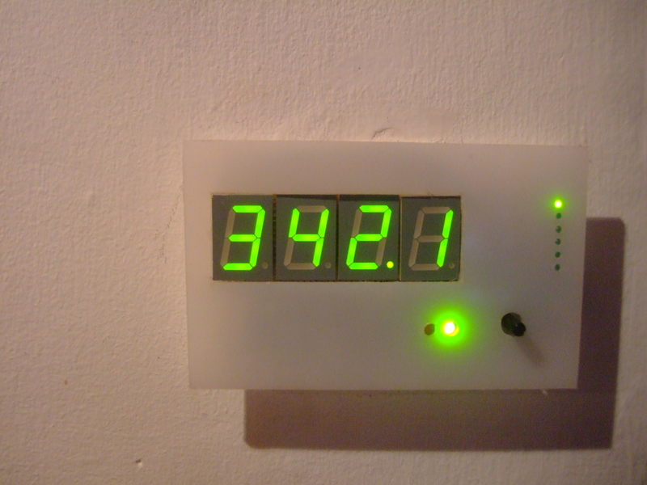

How to add a 7 segment display
This guide details how to add a four-digit seven-segment display with a mode changer that makes it possible to cycle through the various values to be displayed, and a frequency indicator.

The four 7-segment digits are driven by a MAX7221 driver and the mode changer by a shift register to minimize the number of Arduino digital pins needed. The value displayed is controlled by rotating a potentiometer.
There are already excellent guides on building the 7-segment display and the shift register for the mode changer, independently of each other so they won't be repeated here. This guide details how to integrate both, including some pictures of the circuits I built as a layout suggestion, and the adapted Arduino code which is detailed below.
Here are the guides for the 7-segment display and shift register, both in the Arduino playground:
7-segment display
Controlling an LED matrix or 7-segment display with the MAX7219 or the MAX7221 - This is the main page that links to the two pages below.
The MAX7219 and MAX7221 LED drivers - details the 7-segment display hardware, including circuit diagrams and discussion of various factors that need to be taken in to account.
LED Control Library by Eberhard Fahle - details the Arduino library required to drive the display, including download.
Mode chooser
Serial to Parallel Shifting-Out with a 74HC595 - By Carlyn Maw and Tom Igoe. Details how to build the shift register circuit that allows us to have 8 digital output pins with only 3 input pins. I've used 6 of the outputs for the mode chooser and 2 for the frequency indicator.
Layout suggestions
Here are pictures of the boards I built, in case they are useful when trying to work out how to place the components. Let me know if there's any detail that isn't clear. More pictures can be found here.
Left: Circuit board with 7-segment display, mode chooser, frequency indicator, potentiometer and socket.
Right: Circuit board with the 7-segment display removed.
{kind=link}
{kind=link}
Back side of the 7-segment display and mode chooser:
{kind=link}
{kind=link}
Pictures of installation on wall. Communication wire goes through a hole in the wall to the main unit.
{kind=link}
{kind=link}
{kind=link}
Arduino software:
The Arduino sketch works with the display and an Arduino independently of other energy monitor hardware and code. The intent is to make it easier to see what's happening and to make it easier to use the code in other projects. For an example of how to add it to a full setup, have a look here home energy monitor documentation page.
The main addition to the example code by Eberhard Fahle is code to make the decimal point work.
The position of the decimal point depends on the number of significant figures.
Software steps:
- Download the sketch here: SAdisplay.tar.gz
- Compile and upload the sketch to the Arduino. For a guide on compiling and uploading the sketch to the Arduino have a look here.
- You should now see the display light up, and be able to select the values set in the sketch, with the mode chooser.
Further detail on hardware
The display is made up of 3 independent parts:
1) The 7 segment display
To build the display, follow this link:
Controlling a Led matrix or 7-segment displays with the MAX7219 or the MAX7221 -
2) The mode chooser indicator LEDs and the Large Red and Green Led's
The mode chooser LEDs (the 6 small green LEDs) and the 2 larger LEDs are all driven by the shift register.
To build the mode selector, follow this link:
Serial to Parallel Shifting-Out with a 74HC595
3) The mode chooser potentiometer
This potentiometer is connected directly to one of the Arduino analog inputs, As you turn the potentiometer it provides a varying voltage from 0V to 5V which is read by the Arduino via analogRead() The voltage is used to select the mode.
The only thing the 3 parts share in terms of hardware are the same 5V supply and ground.
- There are 3 control lines for the 7 segment to the Arduino
- There are 3 control lines for the shift register
- One analog line from the potentiometer
If you wish to build the unit, I recommend building each section individually first, per the linked guides. In terms of actual order of connection to the Arduino this is how I have it organised, but feel free to choose different pins if you require.
Re: 7 segment display
mode chooser, frequency indicator, potentiometer... can you give me more info about these, and how theyr connected please ?? :D.. i think the socket is to connect with the arduino...therefore it should be connected in a specific way???
Re: 7 segment display
Hey Polidano, added a bit more info above, does it answer your question?
Re: 7 segment display
what can I say...your just number 1 :D.. I really appreciate
Re: 7 segment display
can you please explain to me more how these two are connected together?? cause I got kind of lost..thanks :)
Re: 7 segment display
The 595 is actually independent of the 7219. The 7219 part of the circuit is used to drive the 7-segment while the 595 is used to drive the row of led's.
Re: 7 segment display
may I ask please, where are you using the 8*8 LED matrix, and why?? thanks
Re: 7 segment display
there's no matrix here? :)
Re: 7 segment display
but when you follow other links, there are two max722.. connected together and one of them is connected to an 8*8 LED matrix..thats why im asking why
Re: 7 segment display
I think the same chip can be used for matrixes and 7segments. Im just using it for 7 segments only, so just ignore the matrixes.
Re: 7 segment display
I really like this project! I'm working on a similar project so this is a big help!
Would you post a schematic of the mode chooser? I'm designing a circuit using the MAX7221, and I don't follow why you don't use another 7221/7219 for the mode indicators. I also don't at all follow how the mode chooser pot sends data back to the Arduino.